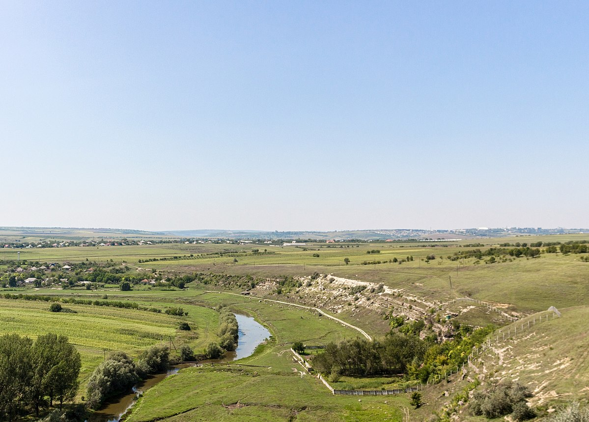
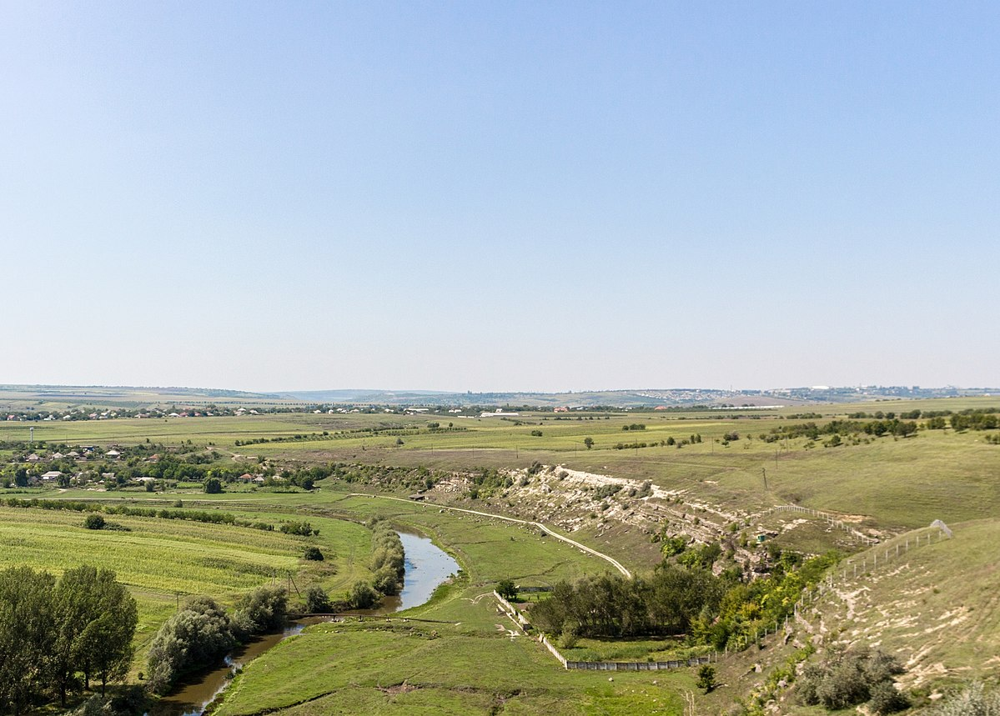

Despre noi
Centrul de Instruire şi Agrement Ivancea al S.A. „ Moldtelecom ” este situat în nemijlocita apropiere a oraşului Orhei şi a destinaţiei turistice Orheiul Vechi, la 30 km distanţa de Chişinău. Într-o zonă foarte pitorească din inima Moldovei şi a Codrilor, aici aveţi posibilitatea să admiraţi un peisaj natural deosebit, unde se îmbină de minune dealurile împădurite, cu lacuri şi cu şes. Îndepărtat de aglomeraţia oraşului, Centrul de Instruire şi Agrement Ivancea este o locaţie unde petrecerea timpului liber sau a unor activităţi vă va oferi energie şi o relaxare pe măsură. Evenimente speciale de familie, escapade de weekend, team building, seminare sau întâlniri de afaceri pot fi găzduite perfect în Cadrul Centrului de Instruire şi Agrement Ivancea, care dispune de o gamă extinsă de servicii de cazare şi organizare evenimente la tarife deosebit de avantajoase.

Obiective turistice
În această zonă unică, în nemijlocita apropiere a Centrului de Instruire şi Agrement Ivancea se află cea mai importantă atracţie turistică a Moldovei, precum şi alte câteva obiective turistice din patrimoniul naţional, a căror vizite vă vor lasă cu impresii deosebite şi de neuitat.
Rezervaţia cultural-naturală „Orheiul Vechi”
Are un statut special și constituie cel mai important sit cultural din Republica Moldova, aflându-se și în procesul de nominalizare pentru a fi înscris în Lista Patrimoniului Mondial al UNESCO. Complexul cuprinde câteva zeci de hectare ale orașului medieval Orhei,două promontorii mari (Peștere și Butuceni), la care se alătură trei promontorii adiacente mai mici (Potarca, Selitra și Scoc), pe teritoriul cărora se află ruinele unor fortificații, locuințe, băi, lăcașuri de cult (inclusiv mănăstiri rupestre) atât din perioada tătaro-mongolă (sec. XIII–XIV) cât și moldovenească (sec. XV–XVI). Complexul Orheiul Vechi constituie un sistem alcătuit din elemente culturale și naturale: landșaft natural arhaic, biodiversitate, cadru arheologic de excepție, varietate istorico-arhitecturală, habitat rural tradițional și originalitate etnografică.
Complexul muzeal „Conacul balioz”
Această mănăstire este amplasată pe un promontoriu din dreapta râului Răut, pe un teren abrupt şi stâncos la înălţimea de aproximativ 60 metri deasupra apei râului. Datează din secolul al X-lea şi este unul din cele mai spectaculoase complexe monastice. Este alcătuită dintr-o biserică şi din 8 peşteri ce corespund, parţial, între ele. Biserica rupestră are aproximativ 6 metri lungime şi 4,5 metri lăţime. În 1821, pe dealul de deasupra intrării în biserica rupestră s-a înălţat o clopotniţă, care se vede şi astăzi. Lângă clopotniţă, deasupra bisericii, exact la extremitatea abruptă a promontoriului, este fixată o cruce masivă din piatră, datată cu sec.XVIII, care se asamblează inseparabil în peisajul sfânt al acestei mănăstiri. Este unica mănăstire rupestră din Basarabia în care inscripţiile s-au păstrat nealterate. Despre ea s-au găsit aliniate chiar şi în descrierile marelui Dimitrie Cantemir, care amintea de “ ruinele unui târg vechi, pe care locuitorii îl numesc Orhei Vechi. De pe situaţia lui se vede că răspunde lui Petrodava din vechia Dacie”.

Monument al naturii hidrologic „Izvorul Jeloboc”
Este o arie naturală protejată de stat. Se întinde pe o suprafaţă de 10 ha, la 1 km sud-est de satul Jeloboc, comuna Piatra, raionul Orhei. Izvorul curge la aproximativ 50 m de malul Răutului, pe un deal stâncos abrupt. Este izvorul cu cel mai mare debit din Republica Moldova (150 litri/secundă) și unul dintre cele mai puternice izvoare din întreaga Europă. Apa este extrem de curată, cristalină, foarte gustoasă, slab mineralizată, practic nu necesită prelucrare și curățare, ceea ce se datorează adâncimii la care își are originea izvorul. Stația, prin intermediul unei rețele de conducte, aprovizionează cu apă potabilă populația orașului Orhei.
 

Casa-muzeu „Alexandru Donici”
Muzeul lui Alexandru Donici a fost inaugurat în anul 1976, în vechiul conac al familiei Donici, locul în care s-a născut fabulistul român Alexandru Donici. Creația lui Donici a fost înalt apreciată de Mihail Kogălniceanu, Grigore Alexandrescu, Vasile Alecsandri și alți contemporani. Însuși Eminescu îl situa printre scriitorii care „și-au încuscrit talentul individual cu geniul poporului…”, numindu-l, în poezia „Epigonii” – „Donici, cuib de-nțelepciune” . În preajma conacului se află biserica „Adormirea Maicii Domnului”, ctitorită de tatăl scriitorului, morminte de familie precum şi izvorul Stânca, amenajat de familia Dimitrie şi Elena Donici. Biserica reprezintă o copie, la scară mai mică, a unei catedrale din Sankt Petersburg.

Mănăstirea Curchi
Localizată în satul Vatici, la 12 km de oraşul Orhei sau la 55 km de capitala Chişinău. Unii cercetători spun că mănăstirea porneşte din vremea domniei lui Ştefan cel Mare. Documentele o datează din vremea domnitorului Alexandru Ghica, când ţăranul Iordache Curchiu întemeiază pe moșia sa un schit de lemn cu hramul Sfântul Dumitru (1773). În 1809 schitul devine mănăstire, iar între anii 1937-1938 se zidește o frumoasă biserica, cu hramul Sfântul Mare Ierarh Nicolae. Printre cititorii bisericii Nașterea Maicii Domnului se numără și Regele Mihai al României. Mănăstirea este inclusă pe listele monumentelor de arhitectura UNESCO. Mănăstirea este vizitată anual de mii de turiști.
Muzeul de istorie şi etnografie din oraşul orhei
Este amplasat în casa lui Mircea Bengulescu, fostul arhitect al orașului. Colecţia muzeului conține mai mult de 20 mii de exponate, cele mai valoroase fiind colecţiile de monede și carte veche,o inscripţie care indică numărul basarabenilor participanţi la război şi a celor morţi în timpul luptelor. Unul dintre compartimentele expoziţiei reflectă efectele Pactului Ribbentrop-Molotov şi tragismul zilei de 28 iunie 1940 pentru basarabeni, menţinându-se că Basarabia a fost ocupată şi anexat forţat la Uniunea Sovietică. Un loc aparte în expoziţie este rezervat victimelor represiunilor staliniste. Tradiţional şi specific pentru orice muzeu, inclusiv pentru muzeul din Orhei, este prezentarea diverselor categorii de arme utilizate în cel de-al doilea război mondial. Din expoziţie nu lipseşte nici informaţia privind consecinţele războiului şi starea în care se afla Orheiul în cel de a doilea Război Mondial. Expoziția permanentă a muzeului este consacrată cercetărilor istorice și arheologice de pe teritoriul raionului Orhei.